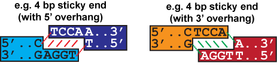

NP-Sticky: Model-Guided Ligation Calculator
Sticky End Free Energy Calculator
There are two methods to obtain the free energy of ligation:
(1) Estimate using DNA thermodynamics (recommended for routine cloning).
(2) Calculate from two-piece ligation experiments by measuring output product distribution (recommended for library assembly applications).
The second method is more accurate for specific ligations conditions and is especially useful when the same sticky ends are used in multiple occasions (e.g., a standard display vector used for various applications).
By DNA Thermodynamics

In both examples above, the sticky end overhang is TCCA with a C before and an A after. (A sticky end overhang of TGGA with a T before and a G after would give the same result.) Mismatch scores are most accurate between sticky ends with the same number of overhang bases.
Please input 1 or 2 sticky ends (5'→3' upper strand) into the form below.
By Experiments
In the form below, please enter the experimental conditions and the results of 1-10 two-piece linear ligations experiments. The output mass ratio can be easily quantified by imaging the ligation products on an agarose gel. This algorithm calculates the sum of the squared residuals between model and experiment for a range of free energies. The free energy of the sticky end is the value that minimizes the sum of the squared residuals. A graph of the resulting residuals is provided to show if a true minimum is obtained.
Please input experimental conditions (up to 10 different trials) into the form below.
 This work is licensed under a Creative Commons Attribution-NonCommercial 4.0 International License.
The Python source codes are available here: se_eval.cgi;
se_fitting.cgi
This work is licensed under a Creative Commons Attribution-NonCommercial 4.0 International License.
The Python source codes are available here: se_eval.cgi;
se_fitting.cgi
Last modified by Daphne Ng on Jan 14th, 2014